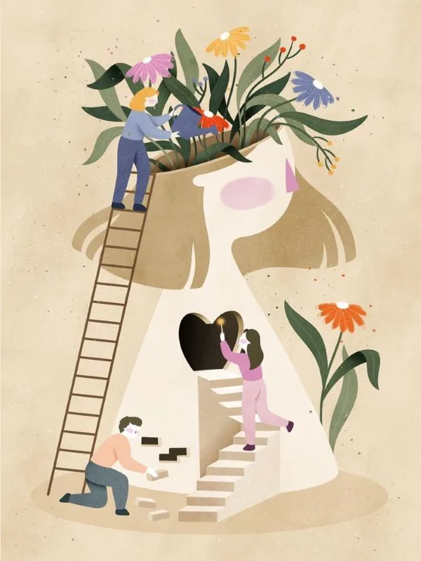

Beaucoup de thérapeutes se disent encore : “Je n’ai pas besoin de site, j’ai déjà Doctolib, les annuaires et un peu d’Instagram.” Pourtant, ceux qui prennent le temps de construire une vraie présence en ligne voient une différence nette : plus de demandes qualifiées, moins de clients “perdus”, et une image beaucoup plus professionnelle.
1. Les patients cherchent d’abord sur Google
Réflexe très simple en 2025 : quand quelqu’un t’a recommandé un thérapeute, tu tapes son nom sur Google. S’il n’y a rien ou seulement une fiche annuaire compliquée, le doute s’installe.
- Les patients veulent vérifier que tu es sérieux·se et installé·e.
- Ils souhaitent voir ta photo, ton cabinet, ta façon de parler de ton métier.
- Ils ont besoin d’être rassurés avant de te confier des sujets très intimes.
Un site web te permet de maîtriser cette première impression : tu décides de ce que les gens lisent et ressentent en arrivant chez toi en ligne.
Ce que les futurs patients veulent comprendre avant de réserver
- Qui tu es au-delà de ton titre.
- Ce que tu proposes concrètement (types de séances, spécialités, durée, tarifs…).
- Pour qui tu es le plus adapté·e (adultes, enfants, stress, anxiété, burn-out…).
- Comment se passe une séance et ce qu’ils peuvent en attendre.

2. Un site renforce ta crédibilité et rassure
Dans le domaine du bien-être et de la thérapie, la confiance est centrale. Un site web professionnel joue un rôle énorme sur cette perception : il montre que tu prends ton activité au sérieux, que tu es installé·e, et que tu as pris le temps de poser un cadre clair.
Quelques éléments qui rassurent instantanément :
À l’inverse, ne pas avoir de site peut donner une impression d’activité “floue” ou peu posée, même si tu es très compétent·e. Les gens comparent – souvent sans le dire.
3. Être visible localement (et pas seulement noyé dans les annuaires)
Les plateformes comme Doctolib ou les annuaires spécialisés sont utiles, mais tu restes une fiche parmi des dizaines d’autres. Avec ton propre site, tu peux travailler ton référencement sur des expressions comme :
- “sophrologue à [ta ville]”
- “thérapeute anxiété [ta ville]”
- “séance de sophrologie en ligne”
L’idée n’est pas de devenir “influenceur”, mais d’augmenter tranquillement ton nombre de prises de contact, en étant présent·e là où tes futurs patients te cherchent déjà.
4. Filtrer les demandes et attirer les “bons” patients pour toi
Un site te permet aussi de dire clairement pour qui tu es le plus pertinent·e. Tu peux, par exemple, indiquer que tu accompagnes surtout :
- des personnes en burn-out ou en surcharge mentale,
- des femmes en poste à responsabilités,
- des adolescents,
- des personnes en reconversion, etc.
Résultat : les personnes qui te contactent se reconnaissent déjà dans ce que tu écris. Elles comprennent mieux ce que tu proposes, ce que tu ne fais pas, et arrivent plus prêtes en séance.
5. Simplifier la prise de rendez-vous et limiter les échanges inutiles
Un site peut aussi alléger ta charge mentale au quotidien. Au lieu de répondre dix fois par semaine aux mêmes questions, tu peux :
- indiquer clairement tes tarifs et les moyens de paiement acceptés ;
- préciser la durée d’une séance ;
- expliquer si tu proposes des séances à distance ;
- intégrer un système de prise de rendez-vous en ligne ou un simple formulaire.
Tu peux tout à fait garder ton mode de fonctionnement actuel (échanges par téléphone ou SMS), mais ton site devient un “pré-filtre” : la personne arrive déjà informée, et ton temps est mieux utilisé.

6. Ce que doit contenir un site de thérapeute efficace
Pas besoin d’un site compliqué. L’important est qu’il soit clair, chaleureux et aligné avec toi. En général, une structure simple comme celle-ci suffit largement :
Accueil
Quelques lignes pour expliquer à qui tu t’adresses et ce que tu proposes, avec une photo et un appel à l’action pour te contacter.
À propos
Ton parcours, tes valeurs, ta façon de travailler. C’est souvent la page la plus lue.
Séances & tarifs
Types de séances, déroulé, durée, tarifs, prise en charge éventuelle, modalités d’annulation.
Contact / rendez-vous
Formulaire simple, coordonnées, plan d’accès, infos pratiques (parking, transports, code d’immeuble…).
Tu peux ensuite ajouter un blog ou une section “Ressources” si tu as envie d’écrire sur certains sujets (anxiété, sommeil, respiration, etc.). C’est très utile pour ton référencement mais ce n’est pas obligatoire dès le départ.
7. Faut-il créer son site soi-même ou se faire accompagner ?
Beaucoup de thérapeutes commencent avec un site “fait maison” sur des plateformes comme Wix ou WordPress.com. Ça peut dépanner, mais on voit vite les limites : design peu lisible, textes peu clairs, infos mal organisées…
Se faire accompagner te permet de gagner du temps, d’éviter les erreurs techniques, et surtout d’avoir un regard extérieur sur ta manière de parler de ton métier. C’est souvent très difficile de le faire seul·e.
Envie d’un site qui reflète vraiment ta pratique ?
Chez SkySocial, on accompagne des thérapeutes, coachs et professionnels du bien-être pour créer des sites web clairs, rassurants et alignés avec leur façon de travailler – sans jargon technique ni usine à gaz.